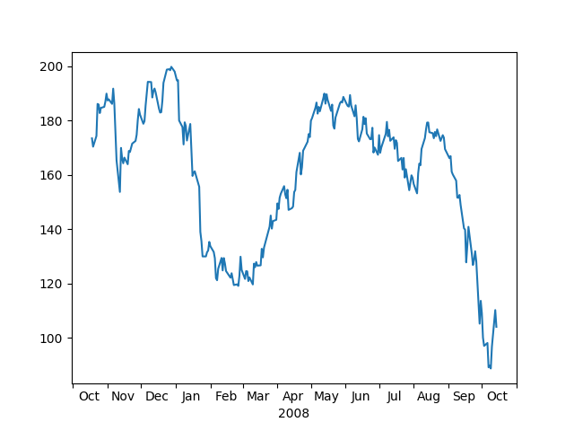

Version 3.0.0
Note
Click here to download the full example code
sometimes it is nice to have ticklabels centered. Matplotlib currently associates a label with a tick, and the label can be aligned 'center', 'left', or 'right' using the horizontal alignment property:
ax.xaxis.set_tick_params(horizontalalignment='right')
but this doesn't help center the label between ticks. One solution is to "fake it". Use the minor ticks to place a tick centered between the major ticks. Here is an example that labels the months, centered between the ticks
import numpy as np
import matplotlib.cbook as cbook
import matplotlib.dates as dates
import matplotlib.ticker as ticker
import matplotlib.pyplot as plt
# load some financial data; apple's stock price
with cbook.get_sample_data('aapl.npz') as fh:
r = np.load(fh)['price_data'].view(np.recarray)
r = r[-250:] # get the last 250 days
# Matplotlib works better with datetime.datetime than np.datetime64, but the
# latter is more portable.
date = r.date.astype('O')
fig, ax = plt.subplots()
ax.plot(date, r.adj_close)
ax.xaxis.set_major_locator(dates.MonthLocator())
ax.xaxis.set_minor_locator(dates.MonthLocator(bymonthday=15))
ax.xaxis.set_major_formatter(ticker.NullFormatter())
ax.xaxis.set_minor_formatter(dates.DateFormatter('%b'))
for tick in ax.xaxis.get_minor_ticks():
tick.tick1line.set_markersize(0)
tick.tick2line.set_markersize(0)
tick.label1.set_horizontalalignment('center')
imid = len(r) // 2
ax.set_xlabel(str(date[imid].year))
plt.show()
Keywords: matplotlib code example, codex, python plot, pyplot Gallery generated by Sphinx-Gallery